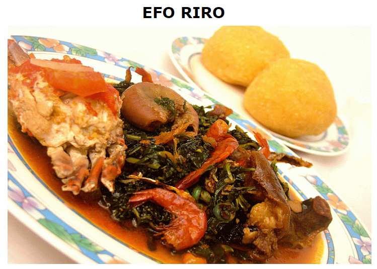

EFO RIRO

DESCRIPTION
Efo riro is a vegetable soup from Yoruba land. Essentially it is cooked by mixing Spinach with spices and an assorted garnish
of meat or other delicacies. Serve with Pounded yam, Eba, Fufu or Amala.
INGREDIENTS
- 400g or two bunches of Spinach Vegetable / Efo tete.
- Blended pepper with onions.
- 5 or more Fresh Tomatoes
- 8 or more some Red Chilli Peppers
- Boiled Seasoned Crab / Snails / Shrimps
- Boiled and seasoned assorted Meat (Beef parts)
- Smoked Stock Fish
- Dry Stock Fish
- Periwinkle
- 300 ml Palm oil
- Maggi/Salt or other seasoning
STEPS
-
STEP 1: Fry four cooking spoons of palm oil in a deep cooking pan, slice onions and add salt, then leave for 2mins.
-
STEP 2: Add the blended pepper, small red chilli pepper, ½ a clove of chopped garlic and ginger and cook for 10 minutes.
-
STEP 3: Add all the ingredients, sliced tomatoes , boiled beef, Cray fish, stock dry fish, assorted meat, shrimps, crab, snail and seasoned, add periwinkle.
-
STEP 4: Add the Spinach vegetable and cook for a further 2-3mins stir together. Serve Efo Riro vegetable soup with Eba, Fufu, Amala or Pounded yam.
Home